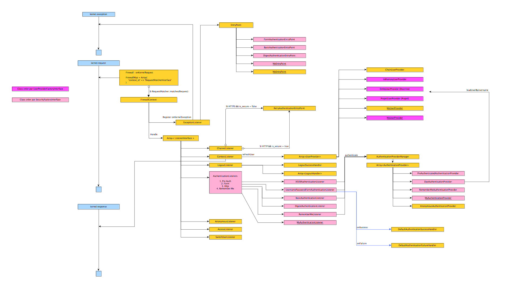
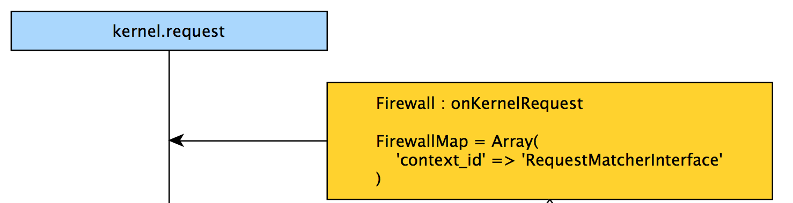
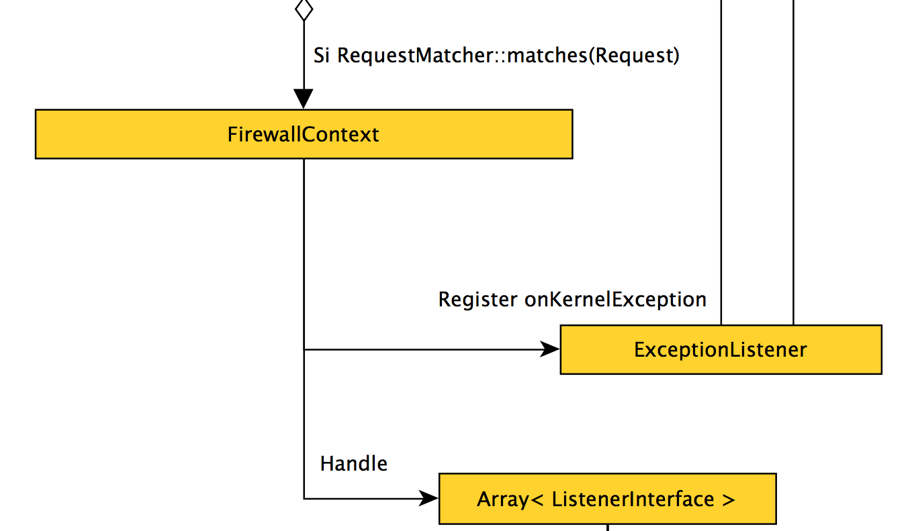
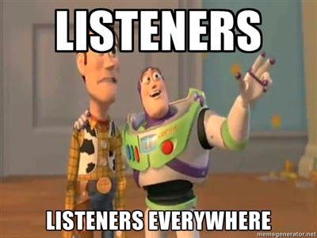
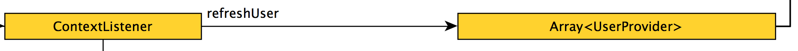
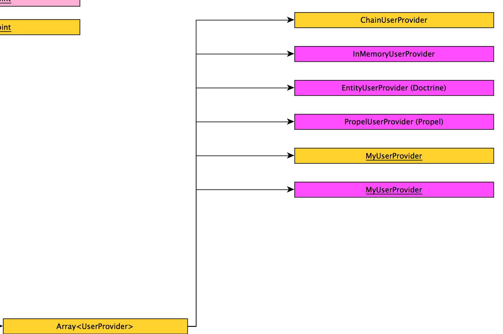
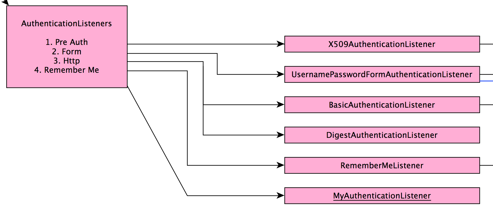
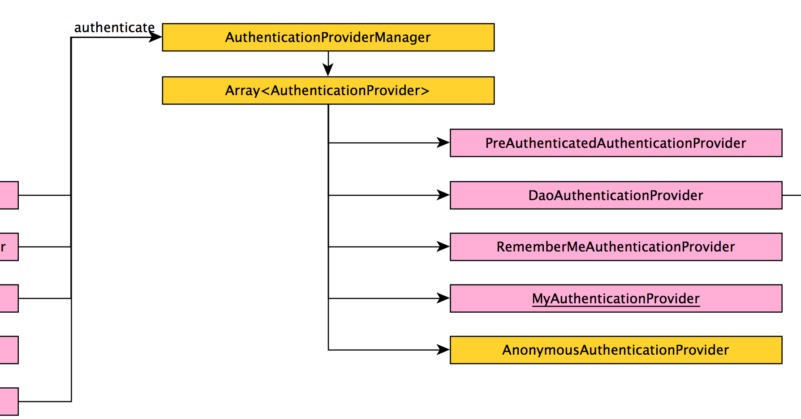
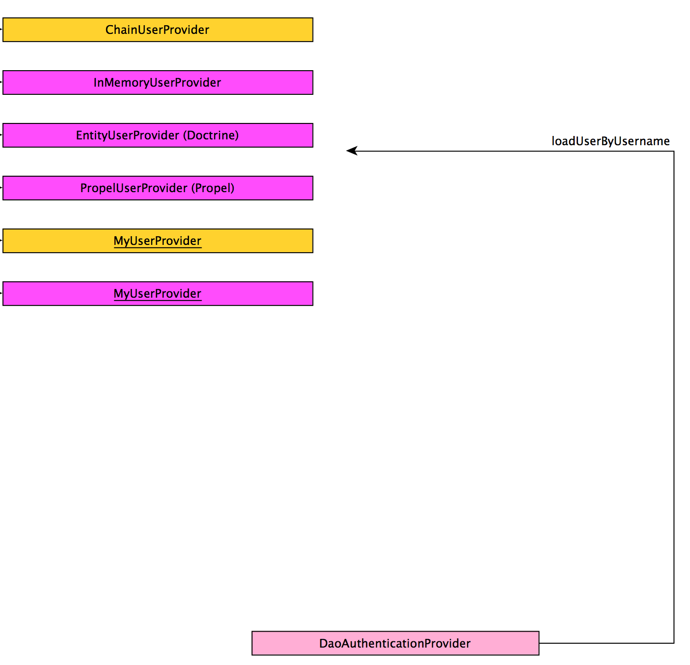

Coucou !
Joel Wurtz
Consultant Web
 @joelwurtz
@joelwurtz
Security Bundle avec de l'aspirine
sfPot - Mars 2013
Security Bundle
- Comment authentifier mon utilisateur : Authentification
- Les droits de mon utilisateur : Autorisation
Authentification
- Dans quel domaine est valable mon utilisateur ?
- Comment déclencher l'authentification ?
- Ou récuperer les informations de mon utilisateur ?
- Que faire lors de la connexion / déconnexion d'un utilisateur ?
- Comment authentifier un utilisateur ?
- Que faire on si mon utilisateur n'est pas valide ?
- Utilisateur anonyme ? Enregistrement en session ? ...
Facile !
Firewall

Firewall
FirewallMap
Associe un domaine (RequestMatcher) à un système de sécurité (FirewallContext)
Firewall : RequestMatcher
Regarde si la requète courante est valide
# -*- mode: php -*-
use Symfony\Component\HttpFoundation\Request;
use Symfony\Component\HttpFoundation\RequestMatcherInterface;
class MyRequestMatcher implements RequestMatcherInterface
{
public function matches(Request $request)
{
//Renvoie vrai si on doit lancer notre système de sécurite, faux dans le cas inverse
return ($request->getHost() == "admin.monapplication.com");
}
}
FirewallContext
Firewall : ExceptionListener
Comment déclencher l'authentification ?
ExceptionListener
Executer lors d'une exception de type AuthenticationException
# -*- mode: php -*-
throw new AuthenticationException();
ExceptionListener
ExceptionListener contient un EntryPoint
# -*- mode: php -*-
namespace Symfony\Component\Security\Http\EntryPoint;
use Symfony\Component\Security\Core\Exception\AuthenticationException;
use Symfony\Component\HttpFoundation\Request;
interface AuthenticationEntryPointInterface
{
public function start(Request $request, AuthenticationException $authException = null);
}
FirewallContext
Firewall : Listeners

Firewall : Listeners
# -*- mode: php -*-
use Symfony\Component\HttpKernel\Event\GetResponseEvent;
interface ListenerInterface
{
public function handle(GetResponseEvent $event);
}
Listener
Un listener traite un Token non-authentifié
Token
Contient les informations relatives à l'authentication et l'autorisation : Utilisateur, Droits, ...
Un Token possède 2 états
- Utilisateur non-authentifié
- Utilisateur authentifié
Listener
Autre rôles :
- Appel AuthenticationManager pour authentifier le token
- Peut définir une réponse pour sortir le firewall
Listeners

ChannelListener
- Rédirige vers HTTPS si la requète doit être sécurisé et que l'on est en HTTP
- Rédirige vers HTTP si la requète ne doit pas être sécurisé et que l'on est en HTTPS
ContextListener
- Persistance du Token dans la Session
- Hydrate l'utilisateur du Token avec des UserProviders

UserProvider
Provenance des utilisateurs

UserProvider
# -*- mode: php -*-
use Symfony\Component\Security\Core\User\UserProviderInterface;
use Symfony\Component\Security\Core\User\UserInterface;
class UserProvider implements UserProviderInterface
{
public function loadUserByUsername($username)
{
}
public function refreshUser(UserInterface $user)
{
}
public function supportsClass($class)
{
}
}
LogoutListener
Déconnecte l'utilisateur

AuthenticationListeners
Authentifies les utilisateurs

AuthenticationProviderManager
Appel des AuthenticationProvider avec un Token

AuthenticationProvider
Créer un token "authentifié" avec le token "non-authentifié"
Exemple : DaoAuthenticationProvider

AnonymousListener
Créer un Token non authentifié
AccessListener
Vérifie les droits de l'utilisateur avec le requète
SwitchUserListener
Permet de se connecter à la place d'un autre utilisateur
Créer son système d'authentification
Factory
Il existes 2 types de Factory :
- UserProviderFactory : Permet la création d'UserProvider
- SecurityFactory : Permet la création de AuthenticationListener, AuthenticationProvider et EntryPoint
UserProviderFactory
# -*- mode: php -*-
class MyUserFactory implements UserProviderFactoryInterface
{
public function getKey()
{
//La clé de notre configuration dans un provider
"my_configuration_key";
}
public function addConfiguration(NodeDefinition $builder)
{
//Ici on définit l'architecture de notre configuration (comme un bundle)
$node
->children()
->scalarNode('my_parameter')->cannotBeEmpty()->end()
->end()
;
}
public function create(ContainerBuilder $container, $id, $config)
{
//Ici on créer notre service selon la configuration
$definition = $container->setDefinition($id, new DefinitionDecorator('my_bundle.security.user.provider.my_awesome_provider'));
}
}
Security
# -*- mode: php -*-
class MySecurityFactory implements SecurityFactoryInterface
{
public function create(ContainerBuilder $container, $id, $config, $userProvider, $defaultEntryPoint)
{
//Fonction qui doit renvoyer nos 3 services
return array($myAuthenticationProviderId, $myAuthenticationListenerId, $myEntryPointId);
}
public function getPosition()
{
//Position d'appel de notre authentification listener et user provider (pre_auth, form, http et remember_me)
return "form";
}
public function getKey()
{
return "my_config_key";
}
public function addConfiguration(NodeDefinition $node)
{
$node
->children()
->scalarNode('my_parameter')->cannotBeEmpty()->end()
->end()
;
}
}
Enregistrer une Factory
# -*- mode: php -*-
class MyBundle extends Bundle
{
public function build(ContainerBuilder $container)
{
parent::build($container);
$extension = $container->getExtension('security');
$extension->addUserProviderFactory(new MyUserFactory());
$extension->addSecurityListenerFactory(new MySecurityFactory());
}
}
Merci !
Questions ?
@joelwurtz
@jolicode
http://jolicode.github.com/SecurityBundle-avec-de-l-aspirine